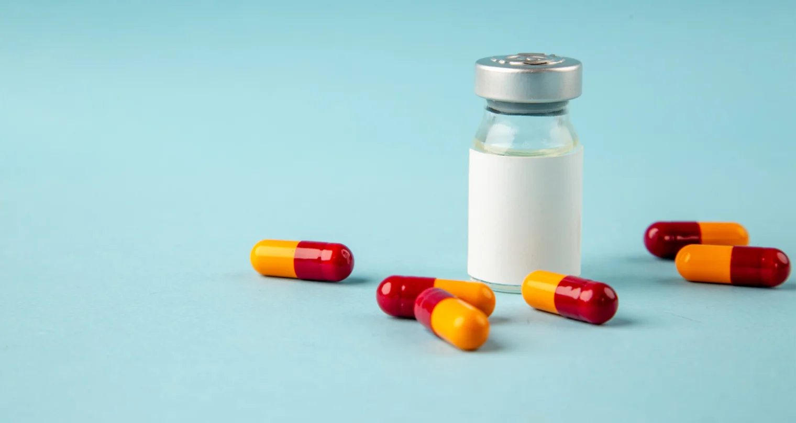

Tablet Tambah Darah (TTD) untuk Ibu Hamil
Tablet Tambah Darah (TTD) adalah suplemen gizi yang diberikan kepada ibu hamil untuk mencegah dan menanggulangi anemia. Selama kehamilan, kebutuhan zat besi meningkat tajam karena ibu harus memenuhi kebutuhan dirinya sendiri sekaligus pertumbuhan janin. Pemerintah menganjurkan ibu hamil mengonsumsi minimal 90 tablet selama masa kehamilan.

Apa Kandungan dan Manfaatnya?
TTD adalah suplementasi gizi yang mengandung zat besi setara 60 mg besi elemental dan 400 mcg asam folat. Zat besi berperan membentuk hemoglobin, yaitu protein dalam sel darah merah yang mengangkut oksigen ke seluruh jaringan tubuh. Asam folat membantu pembentukan sel darah dan mencegah cacat tabung saraf pada janin.
Konsumsi TTD secara rutin membantu memperkuat plasenta, mencegah anemia pada ibu, dan menurunkan risiko perdarahan saat persalinan. Anemia pada ibu hamil sendiri berkaitan dengan risiko melahirkan bayi berat badan lahir rendah (BBLR), kelahiran prematur, hingga kematian janin.
Dosis dan Cara Minum yang Benar
- Jumlah: minimal 90 tablet selama kehamilan.
- Waktu mulai: 1 tablet per hari, dimulai sejak usia kehamilan 12 minggu (trimester kedua).
- Cara: diminum setelah makan. Minum pada malam hari sebelum tidur dianjurkan untuk mengurangi rasa mual.
- Pendamping: diminum dengan air putih atau jus buah kaya vitamin C (misalnya jeruk) agar penyerapan zat besi lebih baik.
- Hindari: jangan minum TTD bersama teh, kopi, atau susu karena dapat menghambat penyerapan zat besi.
Mengapa Ibu Hamil Rentan Kekurangan Zat Besi?
Selama kehamilan, volume darah ibu bertambah dan janin menyerap zat besi dalam jumlah besar untuk membentuk sel darahnya sendiri. Jika asupan zat besi dari makanan tidak mencukupi, bayi akan mengambil kebutuhan dari cadangan zat besi tubuh ibu. Akibatnya ibu berisiko mengalami anemia dan mudah merasa lelah. Karena itu suplementasi TTD diperlukan, bukan hanya mengandalkan makanan sehari-hari.
Pencatatan dan Pemantauan
Ibu hamil dianjurkan mencatat setiap TTD yang diminum pada Buku KIA atau catatan pribadi, lalu melaporkannya kepada bidan atau tenaga gizi saat pemeriksaan. Pencatatan ini membantu tenaga kesehatan memantau kepatuhan minum tablet dan mendeteksi dini risiko anemia.
Hal yang Perlu Diketahui
TTD diberikan melalui posyandu, puskesmas, atau fasilitas kesehatan. Konsumsi TTD tidak membuat bayi menjadi terlalu besar dan tidak membahayakan kehamilan; anggapan tersebut tidak berdasar. Manfaat rutin minum TTD antara lain memperkuat plasenta, mencegah anemia pada bayi, dan mengurangi risiko perdarahan saat persalinan.
Jika muncul keluhan seperti mual, sembelit, atau BAB berwarna gelap (yang normal terjadi), sampaikan kepada bidan atau dokter untuk penyesuaian cara minum, bukan menghentikannya sendiri. Kepatuhan minum TTD secara rutin setiap hari merupakan kunci agar manfaatnya benar-benar dirasakan.
Sumber
- Pedoman Pemberian Tablet Tambah Darah (TTD) bagi Ibu Hamil — Kementerian Kesehatan RI
- Buku Saku Pencegahan Anemia pada Ibu Hamil dan Remaja Putri — Kementerian Kesehatan RI
- Video Informasi Tablet Tambah Darah — Kementerian Kesehatan RI
- Anemia pada Kehamilan – Ditjen Kesehatan Lanjutan — Kementerian Kesehatan RI
Terakhir diperbarui: 11 Oktober 2026